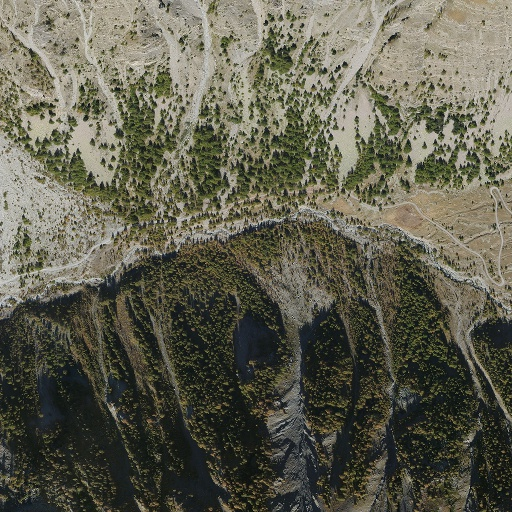

Input data:
Choose the coordinate system and enter point coordinates separated by white spaces.
Moutiere (m)
Lat Long Altitude
East North Altitude (m)
Carthesian (m)
Presets:
-
Display presets
Display Mesures 2010
Display Mesures 2012
Display Mesures 2013
Conversion:
Moutiere
Latitude Longitude Altitude
East North Altitude
Carthesian (XYZ)
Warning:
The point is too far from IGN reference point REF1. Calculations are not accurate.
